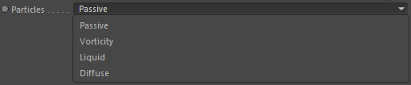
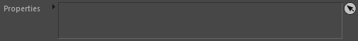

Node
Particle Group
Link here the Particle Group that contains the particles you want to access..
Particles

Defines the particle type (subgroup) in the given Particle Group to access.
Properties

Drag & Drop here any properties you would like to access.
Example:
You add 3 properties to the list: Age (Scalar), Viscosity (Scalar) and Position (Vector).
Once dropped in the list, you can now add 3 outports: 2 of type Scalar and 1 of type Vector. In the same order as you have them in the list.
The outports will be linked (internally) and renamed respectively.